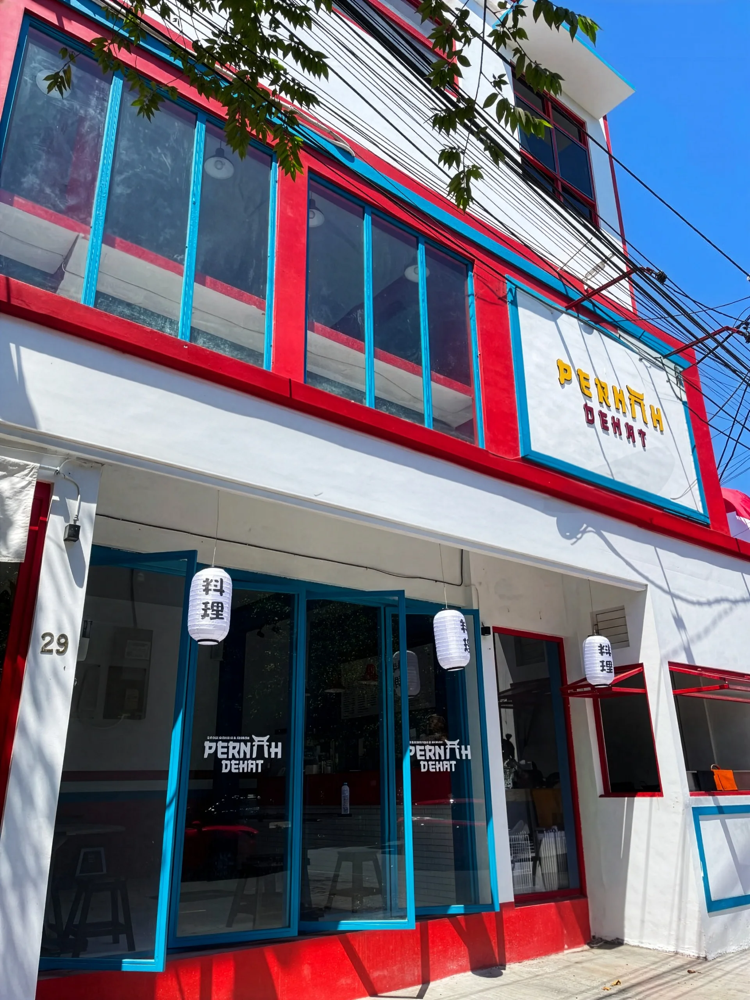

Lokasi
Mampir ke Manyar.
Pernah Dekat berada di Jl. Raya Manyar No. 29, Menur Pumpungan, Kec. Sukolilo, Surabaya, Jawa Timur 60284. Cari fasad merah-putih dengan bingkai biru dan lampion di depan kedai. Kami buka setiap hari pukul 10.00 pagi sampai 02.00 dini hari.
